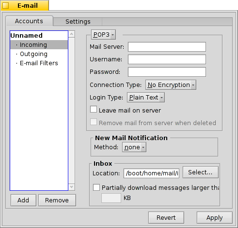
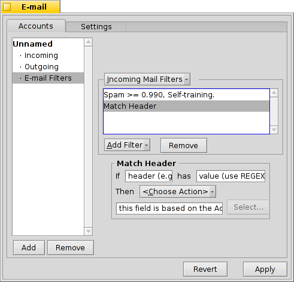
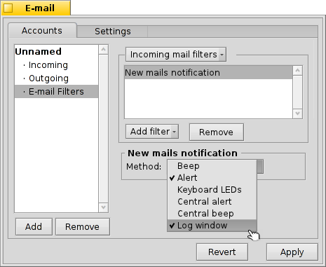

Português (Brazil)
Português (Brazil) Català
Català Deutsch
Deutsch English
English Español
Español Français
Français Italiano
Italiano Magyar
Magyar Polski
Polski Português
Português Română
Română Slovenčina
Slovenčina Suomi
Suomi Svenska
Svenska 中文 ［中文］
中文 ［中文］ Русский
Русский Українська
Українська 日本語
日本語| Índice |
|
Criando uma nova conta de correio Definições de conta Configurando a entrada de correio Configurando a saída de correio Notificações e filtros de correio Configurando um Serviço de Correio |
 Correio Eletrônico
Correio Eletrônico
| Deskbar: | ||
| Localização: | /boot/system/preferences/E-mail | |
| Definições: | ~/config/settings/Mail/* |
O Haiku provê um sistema que recupera correio eletrônico regularmente através de um Serviço de Correio Eletrônico (também conhecido como mail_daemon) e salva cada mensagem como um arquivo de texto simples. Ele analisa a mensagem e preenche seus atributos com todas as informações principais e necessárias, como De, Para, Assunto e seu status de não lido. Agora ele pode ser consultado por você ou por qualquer aplicativo. Este sistema também torna fácil alternar clientes de correio eletrônico como todos os dados e sua configuração permanece a mesma.
A configuração é feita no painel Preferências de Correio Eletrônico.
 Criando uma nova conta de correio
Criando uma nova conta de correio
Vamos passar pelo processo de definir uma conta de correio eletrônico.
Comece clicando no botão para criar uma conta nova, sem nome. Isto abre um painel onde você preenche as informações de sua conta:
Primeiro, defina como receber seu correio, via ou .
Agora entre com seu Endereço de Correio Eletrônico, Nome de Autenticação e Senha, dê um Nome da Conta sob o qual será conhecido no Haiku e seu Nome verdadeiro.
Se sua conta é de um provedor de correio eletrônico de grande porte, o Haiku já conhece todos os detalhes técnicos como endereços IP do servidor. Se não for o caso, clicar abrirá outra janela para entrar com esta informação manualmente:

Primeiro defina o Nome do Servidor, Tipo de autenticação e Tipo de conexão para a caixa de entrada, abaixo os dados para a caixa de saída. As informações necessárias são encontradas no sítio web do seu provedor de correio eletrônico.
Veja abaixo mais informações sobre as várias definições e opções adicionais.
Definições de conta
Selecionando o nome de uma conta na lista à esquerda, pode-se mudar algumas definições gerais:

O Nome da conta é o nome que é mostrado, por exemplo, na lista de contas nas Preferências de Correio Eletrônico. Nome verdadeiro é o nome que alguém vê quando ele recebe uma mensagem sua. Endereço de resposta é o endereço de correio eletrônico que é utilizado quando alguém responde sua mensagem. Normalmente é o mesmo endereço de onde você enviou sua mensagem.
Se deseja utilizar uma conta de correio para apenas enviar ou apenas receber mensagens, pode-se a (des)ativar aquela utilização clicando com o botão direito do mouse no nome da conta na lista da esquerda para definir as caixas de seleção de acordo com sua escolha.
Mais sobre configurar a entrada de correio
Clique em sob o nome da sua conta para configurar como as mensagens são recebidas.
Primeiro é o endereço do para mensagens recebidas. Se seu provedor necessita que você logue em uma porta específica, adicione-a ao endereço, separada por dois pontos. Por exemplo, pop.your-provider.org:1400.
Então entre com seus dados de autenticação, Nome de autenticação e Senha, e se necessário altere o Tipo de autenticação do padrão para .
Se utilizar POP3 recuperar mensagens destas conta a partir de diferentes computadores, você pode querer ativar a opção para e somente localmente.
Se utilizar IMAP ao invés disso, existe a opção para localmente. Pode-se especificar para apenas sincronizar com uma pasta específica e suas subpastas.
Igualmente, pode-se optar por somente um determinado tamanho. Isto irá apenas obter o cabeçalho e pode-se decidir se deseja baixar o restante da mensagem mais possíveis anexos após ver o assunto e quem enviou. Útil caso tenha uma conexão lenta.
Pode-se mudar o Destino da sua Caixa de Entrada (padrão: /boot/home/mail/in/), o que é útil se deseja separar as mensagens de diferentes contas para suas próprias pastas. Contudo, consultas permitem ordenar as coisas muito bem.
Mais sobre configurar a saída de correio
Clique em abaixo do nome da sua conta para configurar como as mensagens são enviadas.

Primeiro é o endereço do Servidor SMTP para mensagens enviada. Assim como o servidor de entrada anterior, pode-se usar uma porta específica se necessário, por exemplo mail.your-provider.org:1200.
Se precisa autenticar-se, modifique o Tipo de Autenticação para e entre com o nome de usuário e senha acima. O outro tipo é usado para provedores que precisam de checagem por correio com para identificação.
Assim como o correio de entrada, pode-se também mudar o Destino da caixa de saída (padrão: /boot/home/mail/out/).
Notificações e outros filtros de correio
Notificações para mensagens recém-chegadas e métodos de ordenar e filtrar o correio são encontrados em sob um nome de conta. Pode-se adicionar qualquer número de filtros que são aplicados um após o outro e rearranjá-los arrastando e soltando-os para sua nova posição.
Atualmente existem três que poderá adicionar. Após adicionar um filtro, selecione-o para ver suas opções.
Filtro de Spam (AGMS Bayesiano)

O filtro de mensagens indesejadas utiliza métodos estatísticos para classificar uma mensagem como indesejada. Ele atribui um valor entre zero e 1 a ela e pode-se decidir o que são os limites para uma mensagem genuína e que será considerado indesejado.
Pode-se ter aquela classificação de spam adicionada ao início do assunto.
Igualmente, o filtro de mensagens indesejadas pode aprender de todo o correio de entrada. Naturalmente, terá que ensiná-lo a ordenar os falso positivos, correios que foram erroneamente marcados como indesejados. Encontrará mais sobre o assunto quando discutirmos o aplicativo Correio.
Junto com o seguinte, você será capaz de automaticamente ordenar correios indesejados detectados.
Filtro de regra

Este filtro compara o cabeçalho da mensagem a um padrão de pesquisa e realiza alguma ação de acordo com as regras definidas.
Com o primeiro campo de texto especifique qual cabeçalho verificar. Estes estão disponíveis:
| o nome do remetente | ||
| o endereço de correio do remetente | ||
| seu endereço de correio (diferente para cada conta de correio) | ||
| o endereço de correio para o qual são enviadas respostas | ||
| a data e hora que o correio foi recebido | ||
| a linha de assunto | ||
| endereços de qualquer pessoa que receba uma cópia (Cc) | ||
| o nome da conta de correio | ||
| O status atual do correio. Normalmente, este pode ser "Lido", "Respondido", "Enviado", "Encaminhado", "Novo", ou qualquer coisa que você mesmo tenha definido. Contudo, a menos que você mesmo tenha mudado num filtro, ele sempre será "Novo" após o Serviço de Correio ter buscado a mensagem. | ||
| é definido pelo programa de correio do remetente (por exemplo, "urgente") | ||
| essencialmente o mesmo que "Assunto", mas sem coisas como Re: ou Fwd: | ||
| dependendo em como o filtro de correio indesejado o classificou, isto irá ou ser vazio (se incerto) ou conter a palavra "Genuíno" ou "Spam" | ||
| esta é uma estimativa numérica que o filtro de correio indesejado atribui ao correio. Eles são exibidos em notação científica, onde 1.065e-12 se traduz em 1.065 dividido por 10 à 12ª potência, o que neste caso significa 0.000000000001065. |
O segundo campo de texto abriga seu padrão de pesquisa. Ele aceita expressões regulares os quais lhe dá grande flexibilidade, enquanto infelizmente complica um pouco as coisas. Leia um pouco sobre o assunto, vale a pena e padrões de pesquisa simples não são tão complicados assim.
Com o menu pop-up abaixo dele, atribua uma ação quando o padrão corresponder. Pode-se mover ou eliminar uma mensagem, definir o status para "Lido" ou qualquer outra coisa ou definir a conta de correio que usará para responder.
Notificação de novos correios

Existem diversos modos para escolher ser notificado de mensagens recém-chegadas. Em encontra-se um número de opções que podem ser combinadas como segue:
| Nenhuma notificação | ||
| Toca o arquivo de som do evento "Novo Correio" definido nas preferências de Sons para todo novo correio | ||
| Exibe uma janela de alerta para todo novo correio | ||
| Pisca alguns LEDs como o indicador de trava de maiúscula | ||
| Exibe uma janela de alerta para todos os novos correios | ||
| Toca o arquivo de som do evento "Novo Correio" definido nas preferências de Sons uma vez para novos correios | ||
| Exibe a janela de relatório |
Filtros de Saída de Correio
Neste momento, existe apenas um filtro que trata com o correio recebido: biscoito da sorte.
Ele irá anexar um engraçado ou sábio "biscoito da sorte" escolhido aleatoriamente no final de cada correio antes de ser enviado. Pode-se experimentá-lo digitando o comando fortune num Terminal.
Configurando um Serviço de Correio
Agora que seus servidores de entrada e saída de correio (e talvez alguns filtros também) estão configurados, diga ao Serviço de Correio que faça toda a verificação e busca, como é o seu trabalho.

Em Verificação de correio configure o intervalo no qual o servidor da conta de correio é sondado sobre novas mensagens.
Se estiver em uma conexão discada, pode desejar fazer com que acesse e também para evitar discar automaticamente com regularidade apenas para verificar o correio.
O serviço de Correio tem uma janela de status a qual pode ser definida para ser exibida , , ou .
Certifique-se de ou não haverá mail_daemon executando para atender seu pedido...

irá abrir a pasta /boot/home/config/Mail/Menu Links/. Todas as pastas ou consultas (!) ou seus vínculos colocados nesta pasta irão aparecer no menu de contexto do ícone da caixa de correio de Serviços de Correio na bandeja da Deskbar.
A partir daquele menu, pode-se também , ou editar as .
Se segurar a tecla SHIFT quando chamar o menu de contexto, obterá comandos adicionais:
| Oferece um submenu para verificar apenas uma conta específica | ||
| Permite enviar correios pendentes sem verificar também novas mensagens | ||
| Desliga toda a infraestrutura de correio eletrônico (mail_daemon) |
O ícone da caixa de correio por si mesma mostra se existem mensagens não lidas (status "Novo") quando existem envelopes dentro.